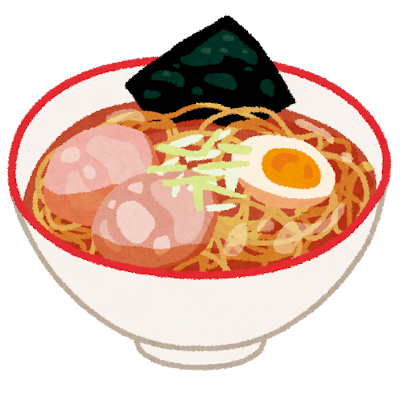

Ramen Recipe
Home

Description
Ramen is a popular Japanese noodle dish served in various flavors of broth. Common variants include salt, soy sauce, miso (fermented soybean paste) and chashu (sliced pork).
Ingredients
- Broth (your choice):
- Wheat flour noodles
- Seasoning sauce
- Toppings (your choice):
Steps
- Simmer broth
- Cook noodles
- Boil a bowl of water
- Add noodles to the boiling water, and cook until slightly soft
- Drain noodles, but do not rinse
- Prepare toppings
- Meat
- Cook meat to specifications
- Add meat to broth
- Vegetables
- Cook vegetables to specifications (you can do this outside or inside the broth)
- Add to broth if you didn't in step 1
- Egg
- Acquire hardboiled eggs
- Either add to broth now or wait to serve with finished bowl
- Prepare bowl
- Acquire properly-sized bowl
- Add noodles to bowl
- Add broth to bowl
- Add vegetables to bowl if you haven't already
- Add remaining items of your choosing
- Consume
Home